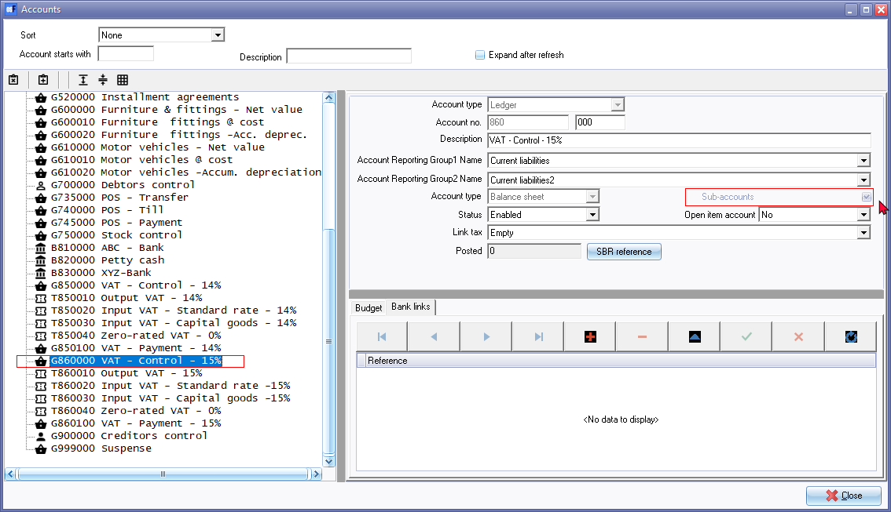
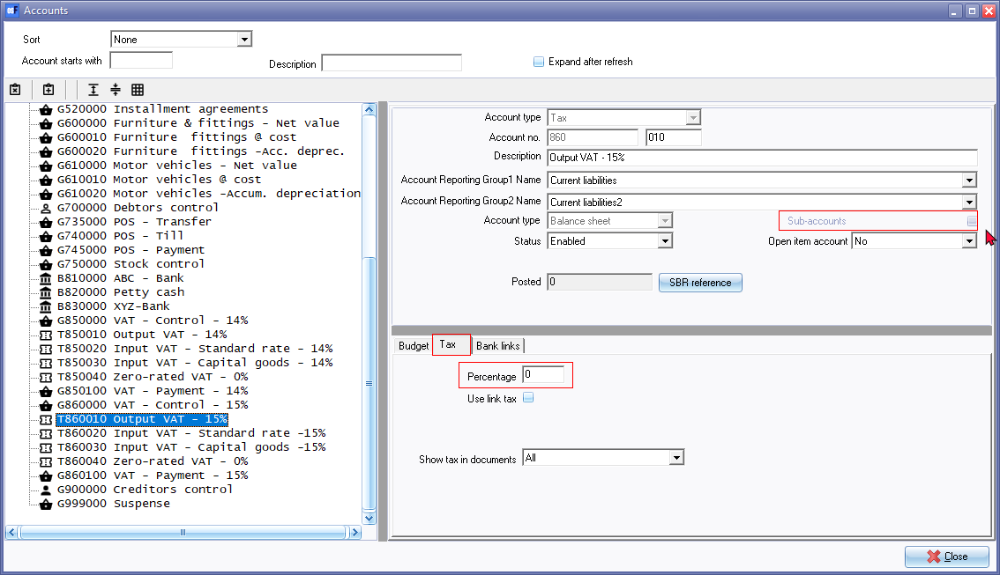
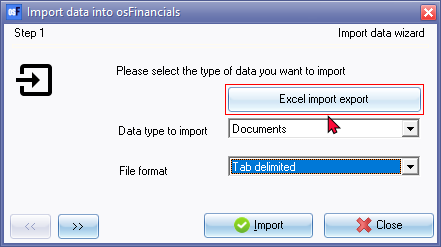
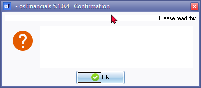
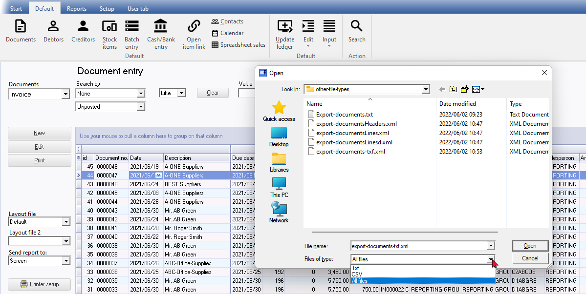

Known issues - Import / Export
Spreadsheet import / export - Works
This feature may be used to import exported "Excel Workbook (*.xlsx) file type Spreadsheet files into:
- Into the same Set of Books.
- Into a different Set of Books.
- Into a new Set of Books -Created from scratch - Create your own Set of Books (Advanced)? option for Firebird database types.
- Into a new Set of Books - Created from scratch - Create your own Set of Books (Advanced)? option for Microsoft SQL sever (MSSQL) database types.
Debtors / Creditors
osFinancials5 supports the "Excel Workbook (*.xlsx) file type Spreadsheet export and import feature.
- Spreadsheet export - You may export debtor (customer / client) accounts and creditor (supplier / vendor) accounts and save it as a "Excel Workbook (*.xlsx) file type.
- Spreadsheet import - You may import debtor (customer / client) accounts and creditor (supplier / vendor) accounts from a saved "Excel Workbook (*.xlsx) file type.
Stock
osFinancials5 supports the "Excel Workbook (*.xlsx) file type Spreadsheet import and export feature.
- Spreadsheet export - You may export stock items and save it as a "Excel Workbook (*.xlsx) file type.
- Spreadsheet import - You may import stock items from a saved "Excel Workbook (*.xlsx) file type.
Batches
osFinancials5 supports the "Excel Workbook (*.xlsx) file type Spreadsheet import and export feature.
- Spreadsheet export - You may export unposted batch transactions and save it as a "Excel Workbook (*.xlsx) file type.
- Spreadsheet import - You may import batch transactions from a saved "Excel Workbook (*.xlsx) file type.
This feature may be used to import transactions into:
- Batches into the same Set of Books - Also handy to handle Repeating transactions.
- Batches into a different Set of Books with a similar accounts.
- Batches into a new Set of Books - Created from scratch - Create your own Set of Books (Advanced)? option for Firebird database types.
- Batches into a new Set of Books - Created from scratch - Create your own Set of Books (Advanced)? option for Microsoft SQL sever (MSSQL) database types.
Spreadsheet import / export - Not working
Accounts
Spreadsheet export / import
osFinancials5 supports the "Excel Workbook (*.xlsx) file type Spreadsheet import and export feature.
- Spreadsheet export - You may export ledger accounts and save it as a "Excel Workbook (*.xlsx) file type.
- Spreadsheet import - You may import ledger accounts from a saved "Excel Workbook (*.xlsx) file type.
Imports accounts but no Sub accounts, etc. Sub-accounts greyed out but ticked for Main accounts
Imports tax accounts with Tax tabs but no tax percentages.


Setup ribbon - Tab delimited - export / import
Export as Tab delimited (creates a txt as well as an xml file)
Import as Tab delimited. Sub accounts is correctly imported but first Tax code (Sub account does not have a Tax tab and percentage. Zero-rated percentages needs to be confirmed.
See - After Import in topic - Import General ledger accounts (Setup ribbon) -
Documents
Spreadsheet export / import
Spreadsheet import option not launched - Launches the "Data Import Export" screen -
Import and Export icons is static.

Import XML
Import XML and Import XML setting is added to the Documents context menu - in osFinancials5.1.0.4 -
Blank confirmation screen - cannot select xml file to import

Context menu - Others - Import
TXF file required to import - Export on the Setup ribbon does not create a TXF file (default)
Only creates an XML file type
Select all file types then the xml file - it does import

Documents - Other export options
Export Documents - Export grid Creates a csv or txt file (for a document type, document status, filter options, etc..) which can be opened in spreadsheets.
Import (Setup ribbon)
Error
cdDoubles: Cannot perform this operation on a closed dataset
Import Stock (Tools - Setup ribbon)
Import stock from a Tab delimited Text file created In Tools - Export ribbon)
Error 3The statement has been terminated.
The INSERT statement conflicted with the FOREIGN KEY constraint "FK_DOCLINE_STOCK". The conflict occurred in database "MSSQL-HANDYMAN", table "dbo.Stock", column 'WStockID'.
Export / Import Posted batches
Export Posted Batches only creates a XML file type
Cannot use the Posted batches import option on Process options in Batch entry screens